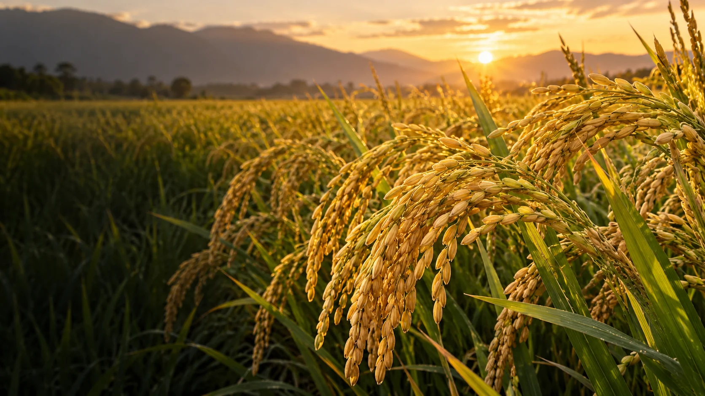

01Giai đoạn đầu vụ
7–20 ngày sau sạ
MINORI Root Turbo
Kích rễ nhanh. Rễ trắng – đẻ nhánh – hấp thu mạnh.
Khám phá sản phẩm
Đồng hành cùng cây lúa từ bộ rễ đến hạt vàng.
Một vụ lúa tốt không được quyết định ở ngày thu hoạch. Nó được quyết định từ lúc bộ rễ đầu tiên hình thành.
Mỗi vụ lúa bắt đầu bằng những câu hỏi rất đời thường.
Minori chọn đồng hành đúng những thời điểm cây cần được chăm sóc nhất: khi bén rễ, khi lớn khỏe và khi tạo hạt.
Làm sao để lúa ra rễ nhanh, đẻ nhánh khỏe?
Làm sao để cây khỏe, ít suy, chịu stress tốt?
Làm sao để cuối vụ cứng cây, chắc hạt, vô gạo tốt?
Chọn đúng sản phẩm ở từng giai đoạn của hành trình cây lúa.
Kích rễ nhanh. Rễ trắng – đẻ nhánh – hấp thu mạnh.
Khám phá sản phẩmDưỡng cây, phát triển mạnh. Khỏe rễ – khỏe cây – tăng sức chống chịu.
Khám phá sản phẩm

Tối đa hóa tạo hạt. Cứng cây – nuôi đòng – vô gạo – chắc hạt.
Khám phá sản phẩm
“Không chỉ là ba chai phân bón. Đây là câu chuyện xuyên suốt một mùa vụ.”
Minori mong trở thành thương hiệu đồng hành với người nông dân ở từng giai đoạn của cây trồng. Với cây lúa, hành trình đầu tiên bắt đầu từ rễ và đi đến hạt vàng.
Từ đất lành • Cho muôn đời xanh
Kết nối với Minori